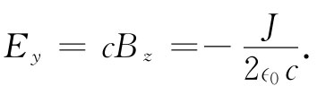
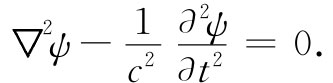
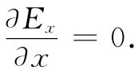
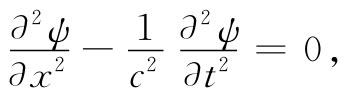

在第18章中，我们就已经达到拥有完整形式的麦克斯韦方程组的目的。对电磁场的经典理论所要知道的一切知识，全都可以在下列四个方程中求得：
当我们把所有这些方程都合在一起时，一个惊人的新现象出现了：由运动电荷所产生的场可以离开源而独自通过空间传播。我们曾考虑过一个特殊例子，在其中一无限大电流片被突然地开通。当电流已经开通了时间t之后，就有均匀的电场和磁场从源处扩展至距离ct。假设该电流片被置在yz平面上，且具有沿正y方向的面电流密度J，则电场将只有一个y分量，而磁场只有一个z分量。在x轴的正方向，x小于ct的地方，这些场的分量由下式给出：
 （20.2）
但对于x大于ct的地方，这些场都是零。当然，也有相似的场从该电流片向负x方向传播而达到相同的距离（在图20-1中我们画出了作为x函数的场其大小在时刻t的图形）。随着时间的推移，在ct处的“波前”会以恒定速度c沿x方向往外传播。
图20-1 在电流片接通后的t时刻，作为x函数的电场和磁场
现在，试考虑下述的事件次序。首先开通单位强度的电流并经历了一段时间，然后突然把电流强度增加至三个单位，并从此一直保持在这一数值上。这时场会像个什么样子呢？我们能够用如下方式来看个究竟。首先，设想有一单位强度的电流在t=0时开通，并且永不改变。这样，对于在x正向的场，其图形就由图20-2（a）给出。其次，我们要问，若在t1 时刻开通两个单位的恒定电流又将发生什么呢？
在这一情况下场将比原来增强一倍，但在x方向仅传播到c（t-t1 ）那么远的距离，如图20-2（b）所示。当我们运用叠加原理而把这两个解相加起来时，就会发现这两个源之和在从零至t1 的时间里电流为一单位而在大于t1 的时间里电流为三单位。在t时刻则场随距离x变化的情形如图20-2（c）所示。
图20-2 由一电流片产生的电场。（a）在t=0时，一单位电流被接通；（b）在t=t1 时，二个单位的电流被接通；（c）（a）和（b）两者的叠加
现在，让我们处理一个较复杂的问题。考虑这样一种电流，开通至一单位强度，过了一会儿之后，又增强至三个单位，再过些时间便完全给截断。对于这么一种电流，场又将如何呢？我们能够按照同样的办法来求出解答——把三个分开着的问题的解都相加起来。首先，求一个单位强度的阶梯式电流的场（这问题我们已经解决）。其次，再求两个单位的阶梯式电流的场。最后，才解出负 三个单位的阶梯式电流的场。当把这三个解相加起来时，我们将得到一个电流，它从t=0起至某个往后时刻——比如说t1 ——有单位强度，然后又有三个单位强度，并一直持续到一个更后时刻t2 ，才将其完全切断——也就是变成零。作为时间函数的电流曲线如图20-3（a）所示。当我们将电场的那三个解相加起来时，便求得在某个给定时刻t电场随x的变化如图20-3（b）所示。场是电流的确定表象。场在空间中的分布就是电流随时间变化的一条漂亮曲线，只不过要倒转过来画才对。随着时间流逝整个图形会以速率c向外运动，因而就有一小截场朝正x方向传播，这里含有全部电流变化历史的完整而详尽的记录。要是站立在若干英里以外，我们能够从电场和磁场的变化情况中准确地说出在源处电流曾经是怎样变化的。
图20-3 如果电流源强度随时间的变化如图（a）所示，则在箭头所指的t时刻电场作为x函数就如图（b）所示
你也将注意到，在源处的所有活动都已完全停止后很久，一切电荷和电流都变为零，而那一小块场仍将继续通过空间传播。我们有了不依赖于任何电荷或电流而存在的一种电场和磁场分布。这就是来自完整麦克斯韦方程组的新效应。如果我们愿意，尽可以对刚才所做的分析给出一个完全数学形式的表示，即把在某一给定地点和给定时刻的电场写成与在源处的电流成正比，只不过不是在同一 时刻、而是在较早 时刻t-x/c的电流。我们可以写成
（20.3）
信不信由你，早在第1卷当与折射率理论打交道时，我们就已经从另外的观点导出过这种相同的公式。当一片具有偶极子系统的、电介质材料中的一薄层电偶极子，当受到照射进来的电磁波的电场驱动而发生振动时就产生电场。那时我们的问题是要算出原来的波与由振动偶极子辐射的波的合成场。在还没有（提到）麦克斯韦方程组时怎么能够算出由运动电荷产生的场呢？当时我们曾（不做任何推导）把加速点电荷在远处所产生的辐射场的一个公式作为我们的出发点。如果你查阅一下第1卷第31章，你就会看到，那里的式（31.17）同我们刚才写的式（20.3）完全一样。尽管我们以前的推导只有在距离源很远处才正确，但现在明白，即使在靠近源处相同的结果仍然是正确的。
现在，我们要一般地考察在离源也即离电流和电荷很远的真空空间中电场和磁场的行为。在十分靠近源处——近至足以使源在传播的延迟时间内还来不及做出大的变化——场与我们过去在所谓静电和静磁的情况下所求得的场几乎完全相同。然而，如果我们已离开足够远的距离以致延迟变得十分重要，则场的性质就可能与我们找到的那些解完全不同。在某种意义上，当场远离所有的源时，它便开始具有它们本身的特性。因此，我们便可以开始讨论在既没有电流也没有电荷的区域里场的行为了。
假设我们询问：在ρ和j两者都是零的区域里哪一种场可能存在呢？在第18章中我们曾看到，麦克斯韦方程组的物理内涵也可以利用标势和矢势的一组微分方程来表示：
如果ρ和j都是零，则这些方程具有较简单的形式：
这样，在自由空间里，标势ϕ和矢势A的每个分量就都满足相同的数学方程。假如令ψ代表ϕ，Ax ，Ay ，Az 四个量中的任一个，则我们需要研究下列方程的通解：
 （20.8）
这个方程称为三维的波动方程——所谓三维，是因为函数ψ通常可能依赖于x，y和z，因而我们必须关心所有三个坐标的变化。如果将拉普拉斯算符的三项都明显写出，则上式就清楚地变成：
在自由空间中电场E和磁场B也都满足波动方程。例如，由于B=▽×A，所以我们可通过取式（20.7）的旋度而得到一个关于B的微分方程。由于拉普拉斯算符是一标量算符，因而它与旋度算符可以互相交换次序：
▽×（▽2 A）=▽2 （▽×A）=▽2 B.
同理，旋度算符与∂/∂t的次序也可以互换：
利用这些结果，便可获得下列B的微分方程：
（20.10）
因此，磁场B的每一分量就都满足三维波动方程。同样，若利用E=-▽ϕ-∂A/∂t这个事实，则由此得出在自由空间中的电场E也满足该三维波动方程：
（20.11）
一切电磁场都满足相同的波动方程（20.8）。也许我们还会问：这个方程最一般的解到底是什么？然而，与其马上去处理这个困难问题，倒不如先来看看对于不随y和z变化的那些解一般能够说些什么（常常要先解决容易的情况以便能看清将会发生的事情，然后你才能处理那些较复杂的情况）。让我们假定那些场的大小只取决于x——场不随y和z变化 。当然，我们又在考虑平面波了。应该期待得到与前一节中多少有点相似的结果。事实上，我们将精确地求得相同的答案。你可能会问：“为什么还要全部重做一遍呢？”再做一遍很重要。第一，因为我们过去从未证明已找到的波就是关于平面波最普遍的解；其次，则因为我们当时仅从一个非常特殊类型的电流源找到了那些场。现在我们很想问：存在于自由空间中最普遍类型的一维波到底是什么？我们不能通过观看这个或那个特殊源所发生的事情而做到这一点，而必须以更大的普遍性来处理这个问题。而且这次将要处理微分方程而不是处理一些积分形式。尽管将得到相同的结果，但仍不失为一种反复练习的途径，借以证明无论你采取什么方法都不会产生任何差别。你应该懂得如何去用多种方法来做事情，因为当碰到一个困难问题时，你往往会发现在各种方法中只有一种是易于处理的。
我们或许有可能直接考虑解某个电磁量的波动方程。但相反，我们要一开始就从自由空间中的麦克斯韦方程组出发，以便使你能够看到它们与电磁波之间的密切关系。因此，我们就从式（20.1）中的方程组开始，令电荷和电流都等于零。它们变成
我们假定场不随y和z变化，因而最后两项都为零。于是，这个方程告诉我们：
 （20.14）
它的解Ex 是在x方向的电场分量，它在空间里是一个恒量。如果你考察（20.12）中的Ⅳ式，同时假定B在y与z方向没有变化，那么你就能够看出Ex 在时间上也是不变的。像这样的场，或许有可能来自远处某个充电电容器极板的恒定直流场。此刻，我们对于这种枯燥乏味的静电场不感兴趣，目前感兴趣的只是一些动态变化的场。对于动态 场来说，Ex =0.
于是我们就有一个重要结果，对于沿任何方向传播的平面波，电场必须垂直于传播方向 。当然，它仍然能够以复杂的形式随坐标x变化。
这横向的E场总可以分解成两个分量，例如y分量和z分量。所以让我们先算出电场仅有一横分量的情况。我们将先考虑一个始终在y方向而不具有z分量的电场。显然，若已解出了这个问题，也就能解出电场总是在z方向的那种情况。通解始终可以表达成这样两种场的叠加。
现在，我们的方程组已变得多么容易。电场的唯一不等于零的分量为Ey ，而所有的微商——除了对于x的微商以外——都等于零。这样，其余的麦克斯韦方程就变得很简单了。
其次，让我们来看看麦克斯韦方程组中的第二个方程［式（20.12）中的Ⅱ］。将E旋度的各分量写出，得
▽×E的x分量为零，因为对y和对z的微商都是零。它的y分量也是零；其中第一项为零是因为Ex 对z的微商为零，而第二项为零是由于Ez 为零。E旋度唯一不等于零的分量为z分量，它等于∂Ey /∂x。令▽×E的三个分量对应-∂B/∂t的分量，我们可以得到下列结论：
由于磁场的x分量和y分量两者对时间的微商都为零，所以这两分量正好是恒定场并且与我们以前找到的静磁解相对应。可能某人曾将某个永久磁铁遗留在靠近波传播的地方。我们忽略这些恒定场，并设Bx 和By 等于零。
顺便提一下，我们可能已经得出结论：由于别的原因B的x分量应为零。由于B的散度为零（由第三个麦克斯韦方程得知），运用与我们上面关于电场所用的相同论证，就会得出结论，磁场的纵向分量不可能随x变化。既然我们忽略波动解中的这种匀强场，因此就应该令Bx 等于零。在平面电磁波中，B场以及E场都一定与传播方向垂直。
式（20.16）给我们提供一个附加定理：如果电场只有y分量，则磁场将只有z分量，所以E和B互相垂直 。这正好是我们曾经考虑过的特殊波中所出现的情况。
现在准备利用关于自由空间中的最后一个麦克斯韦方程［式（20.12）中的Ⅳ］。写出分量后，得：
在关于B分量的六个微商中，只有∂Bz /∂x一项不等于零。因此，这三个方程仅给了我们一个方程
（20.18）
上述一切工作的结果表明，电场与磁场都仅有一个不等于零的分量，而这些分量应该满足式（20.16）和（20.18）。如果前一式对x取微商而后一式对t取微商，则这两个方程可以结合成一个，这时两方程的左边（除了因数c2 之外）将相同。因此我们发现，Ey 满足下列方程
（20.19）
在过去学习声音的传播时，我们就已经见过相同的微分方程。它是关于一维波的波动方程。
你应该注意到，在我们的推导过程中已经发现的某些东西比包含在式（20.11）中的要多 。麦克斯韦方程组已给了我们进一步的知识，即电磁波只具有垂直于其传播方向的场分量。
让我们复习一下已知的关于一维波动方程的解。如果有任何量ψ满足一维波动方程
 （20.20）
则一个可能的解是如下形式的函数ψ（x，t）：
ψ（x，t）=f（x-ct）. （20.21）
也就是说，它是单 变量（x-ct）的某种函数。函数f（x-ct）代表一个在x轴上的“刚性”图形朝着正x方向以速率c在传播（见图20-4）。例如，若函数f当它的自变量为零时有一个极大值，则在t=0时该极大值会出现在x=0处。此后在某一时刻，比方说当t=10时，ψ将在x=10c处有它的极大值。随着时间的推移，这极大值以速率c朝着正x方向行进。
图20-4 函数f（x-ct）代表一个朝正x方向以速率c行进的不变“形状”
有时这样说会更方便，即一维波动方程的一个解是（t-x/c）的一个函数。然而，这里谈的是同一件事情，因为（t-x/c）的任何函数也是（x-ct）的函数：
让我们来证明f（x-ct）的确是波动方程的一个解。由于它是只有一个变量——即自变量（x-ct）——的函数，因此我们将令f′表示f对它的变量的微商，而f″表示f的二次微商。求式（20.21）对x的微商，得
由于（x-ct）对x的微商为1，所以ψ对x的二次微商显然等于
我们看到，f确实满足一维波动方程。
你可能感到诧异：“如果我有那个波动方程式，又怎么会知道应取f（x-ct）作为它的解呢？我就不喜欢这种逆向的办法。是否有某种正向 的办法来找出解答呢？”噢，一个好的正向的办法就是要了解那个解答。有可能“设计”出一个表面上看来是正向的数学论证，特别是因为我们已知道解答大致应该如何，但对于一个这么简单的方程来说就不必按部就班了。不久你将会达到这样的程度，当看到式（20.20）时，就几乎同时看出ψ=f（x-ct）是一个解（就像现在当你看到x2 dx的积分时，你马上就知道答案是x3 /3）。
实际上，你也应该看出稍微多一点的东西。不仅任何（x-ct）的函数是一个解，而且任何（x+ct）的函数也是一个解。既然波动方程中仅含有c2 ，所以改变c的符号就不会引起任何差别。事实上，一维波动方程最普遍 的解乃是两个任意函数之和，其中一个是（x-ct）的函数而另一个则是（x+ct）的函数：
ψ=f（x-ct）+g（x+ct） （20.24）
第一项代表一个沿正x方向传播的波，而第二项则是沿负x方向传播的任意波。通解就是同时存在的两个这样的波的叠加。
____________________
我们将把下面一个有趣的问题留给你去思考。考虑如下形式的一个函数ψ：
ψ=coskxcoskct.
这个式子并不取（x-ct）或（x+ct）的函数形式，但你可以通过将其直接代入式（20.20）中而轻易地证明这函数就是波动方程的一个解。那么，我们怎么能够说通解具有式（20.24）那样的形式呢？
____________________
将我们关于波动方程解的那些结论应用到电场的y分量Ey 上去，就可以断言，Ey 能够按任何一种方式随x变化。然而，确实存在的场总可以认为是两个图形之和。一个波是在一个方向上以速率c通过空间飞驶，带有一个垂直于电场的相伴磁场；另一个波则是在相反方向上以同一速率传播，像这样的波相当于我们所已熟悉的各种电磁波——光、无线电波、红外辐射、紫外辐射、X射线等等。我们曾在第1卷中详细讨论过光的辐射。由于在那里学过的每件事情都适用于任何电磁波，所以我们不需在这里详尽讨论这些波的行为了。
也许应当对电磁波的偏振问题进一步做几点评论。在上述的解中，我们曾选择考虑其中电场只有一个y分量的那种特殊情况。显然还有另一个解，其中电场只有一个z分量，但也是朝着正的或负的x方向传播的波。由于麦克斯韦方程组是线性的，所以对于沿x方向传播的一维波的通解就是Ey 波和Ez 波之和。这个通解可以综合在下列方程中：
这样的电磁波具有一个E矢量，其方向并非固定而是在yz平面上按某种任意方式旋转。在每一点磁场总是垂直于电场，也垂直于传播方向。
如果只有在一个方向、比如在正x方向上传播的波，就存在一个简单法则，它告诉我们关于电场和磁场的相对取向。这法则是：叉积E×B——当然，那是一个既垂直于E又垂直于B的矢量——指向波传播的方向。如果按照右手螺旋法则E被转到B，则这个螺旋指向波的速度方向（往后我们将看到，矢量E×B具有一个特殊的物理意义：它是描述电磁场中能量流动的一个矢量）。